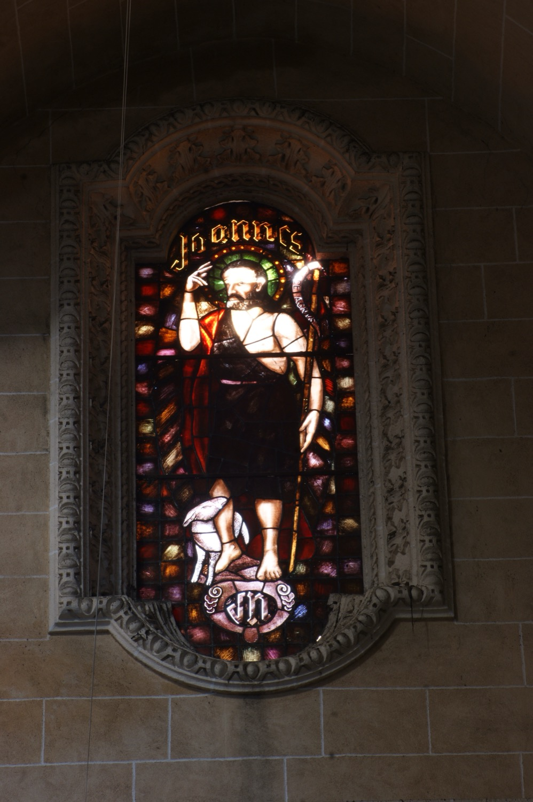

Sant Joan Baptista (s. I) va ser fill d’Isabel, cosina de la Verge Maria, i de Zacaries, a qui l’arcàngel sant Gabriel anuncià el naixement de Joan i revelà que seria el precursor del Messies. Ja d’adult, Joan dugué una vida ascètica al desert, dedicada a la predicació del penediment dels pecats i al baptisme en el riu Jordà, com a símbol de la purificació dels pecats en preparació per a l’arribada del Regne del Cel. Va ser en aquest context que batejà Jesucrist poc abans que aquest començàs la seva vida pública de predicació.
En aquest vitrall, sant Joan hi apareix acompanyat d'un xotet i sostenint una creu llarga feta de canya amb una filactèria on es llegeix "Ecce Agnus Dei". La creu ens recorda que sant Joan coneixia el futur martiri de Jesús, mentre que la canya amb què és feta simbolitza l’austeritat de la seva vida al desert. El xotet i el text de la filactèria fan referència a les seves paraules en el moment de batejar Jesús: "Aquest és l'anyell de Déu, el qui lleva el pecat del món”.
Les inicials JN de la part inferior del vitrall fan referència al donant que en finançà la confecció.